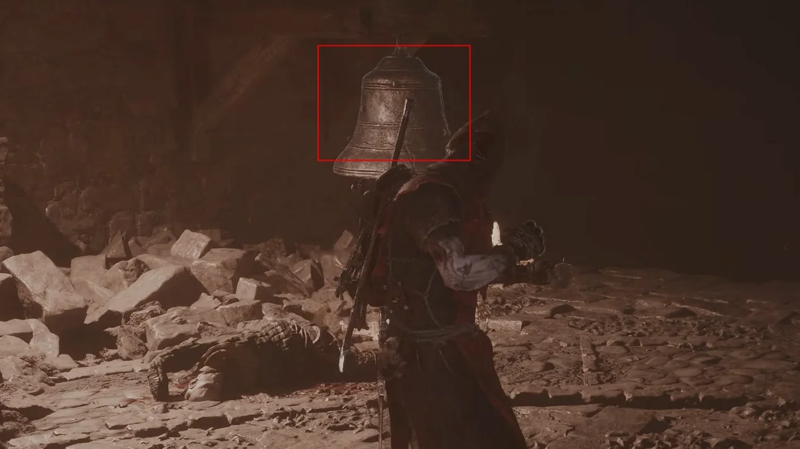
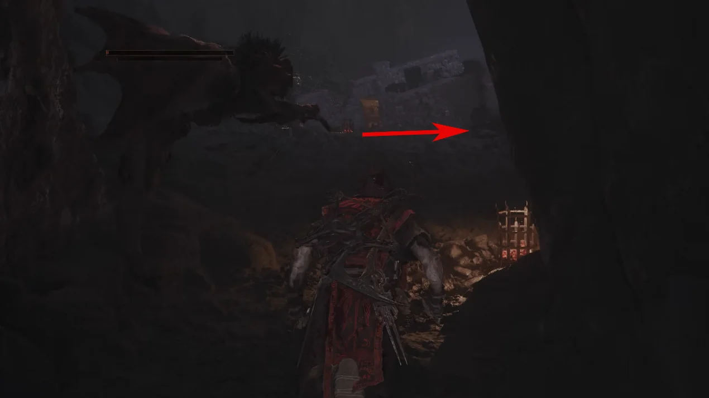
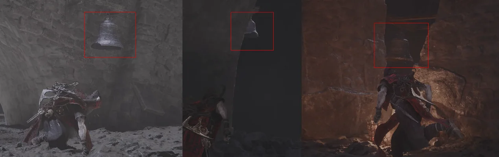
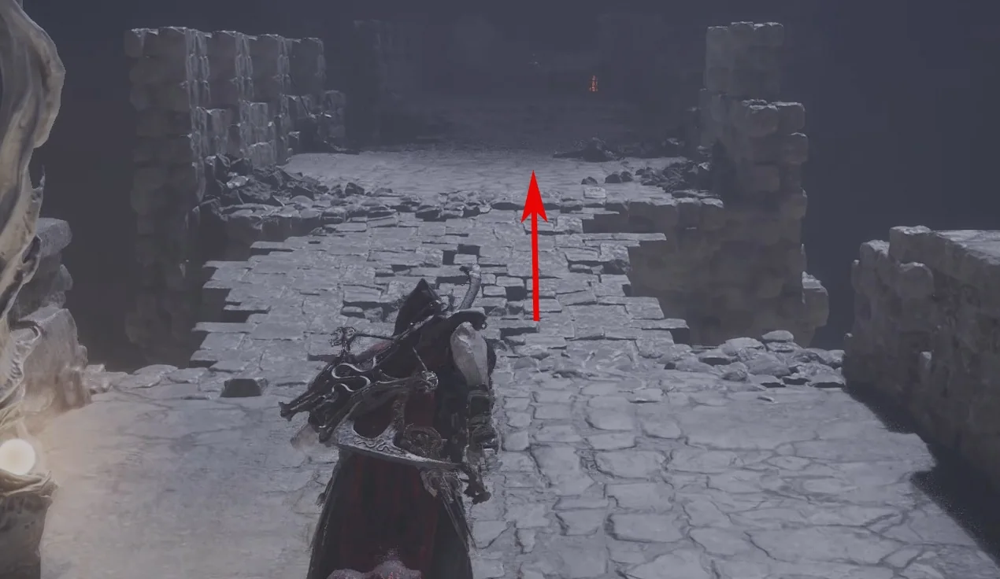
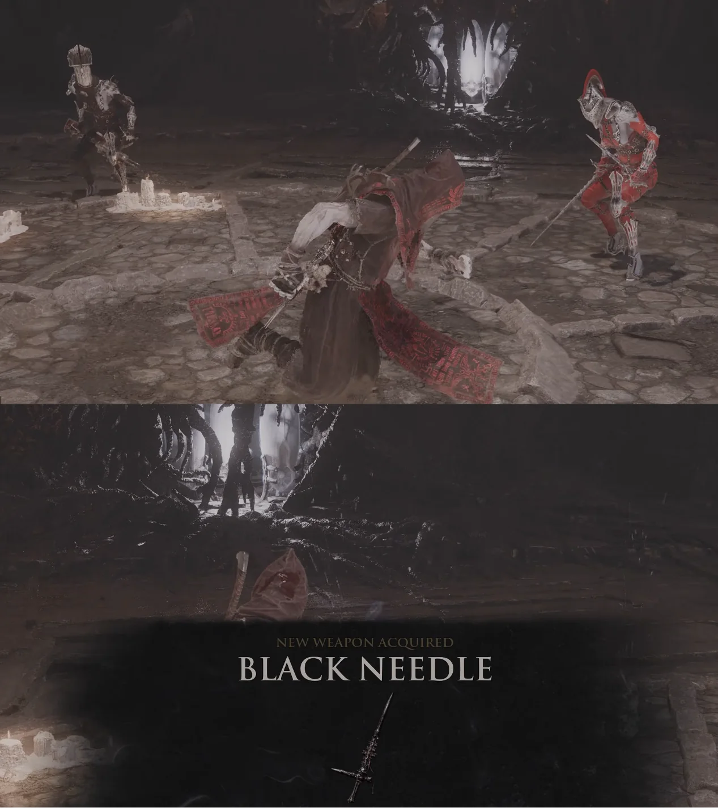

Primary weapon acquisition · Mammon
How to get
Black Needle
Follow this captured route from Sester's Gate Beacon to obtain Black Needle.
- Region
- Mammon
- Starting point
- Sester's Gate Beacon
- Base damage
- 35
 Route 01Travel to Sester's Gate Beacon, choose Cleanse Beacon, then enter Sester's Bastion.
Route 01Travel to Sester's Gate Beacon, choose Cleanse Beacon, then enter Sester's Bastion.
Route 02Move forward until the broken stone bridge. Strike the bell to activate its broken path.
Route 03The bridge has three breaks. Go beneath it and find the three bells shown.
Route 04Strike each bell once to restore every bridge section.
Route 05Return to the bridge, continue to its end and use the jump device.
Route 06Move forward after landing. Defeat the enemy that appears to receive Black Needle.